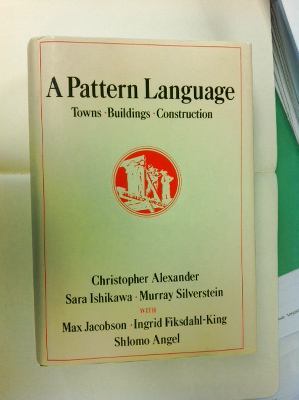
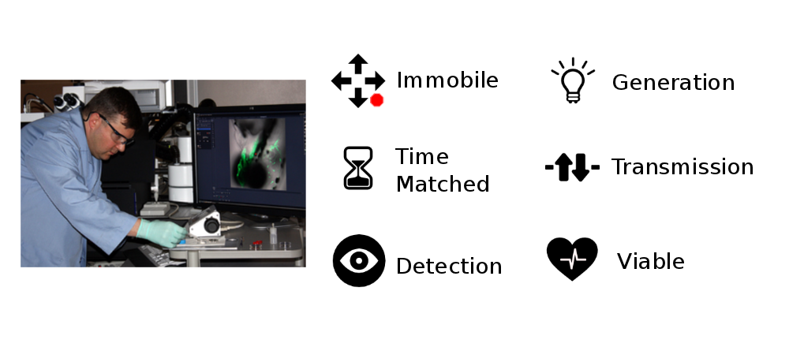

Pattern Mining
Uncovering the hidden structure of lab work
Cameron McLean / @cammerschooner

This work is licensed under a Creative Commons Attribution 4.0 International License.
What are we doing?
What do we hope to achieve?
- Collaboratively reflect on the challenges we face at the bench, and the methods we use to address them.
- We want to capture expertise and make it available to wider audiences
- We hope to extract transferable and verifiable elements of experimental design knowledge.
What is a Design Pattern?

Christopher Alexander
“Each pattern is a relationship between a certain context, a certain system of forces which occurs repeatedly in that context, and a certain spacial configuration which allows these forces to resolve themselves.”
Context, Forces, Spacial Configuration of a Lab Expt.
Live Imaging CC-BY-NC-SA 2.0 EMSL
Pattern concepts give us design level insight
Mount larvae on their sides in 1.5% low melting point
agarose in a glass-bottom dish filled with 0.3% Danieau's solution containing 0.01 mg/ml Tricane ...
The Rules
- You are an expert, you know the answers - use your experience and reflect.
- Use others feedback to help clarify what you mean, or to reveal something hidden or assumed.
- We all have the same frustrations in the lab - this a permissive environment - it's safe to share.
- It's OK to not know something (It's a bit like drawing a bicycle!).
- Ideas are good. Questions are good.
- If you get stuck - just put in a placeholder and move on.
- We are not expecting a masterpiece. Bullet points are great.
- Sometimes the tasks can be difficult. But it should be fun too! Remember to smile :)
The Process
- Only approximately linear. Switch back and forth often.
- We want to shift from the specifics of your protocol to the underlying structure.
- What general problem does it solve? Why does it work? What influences the choice/design of each important step.
- Use your group, the internet, any resources you need!
A Note on Abstraction
- Moving among levels of abstraction gives us deeper insight.
- We want a broader view at the level of system behaviour.
- The more ways we have of looking at a system, the more insight we can gather.
See the abstraction handout
Protocol Pictionary - 5min
- Draw the essence of what your protocol is doing.
- Try not to just draw the steps - capture the key ideas and arrangements in time and space.
- Use colours! Add words and labels!
Use the Protocol Pictionary sheet!
Analysis and Shared Experience - 15min +
- Think about the background to your protocol.
- What things do you wish someone had told you before you started?
- Imagine you are explaining your protocol to someone with no experience who has just joined the lab...
Use the Analysis and Experience sheet
Abstracting the 'whats' and 'whys' - 20Min
This is where we get at the underlying structure and design rationale of the protocol.
- Define the important physical features that are worth abstracting.
- Then think about the functional purpose of these entities in the context of the protocol.
- Try and identify all the 'forces' that are operating and that influence the choice of materials or steps.
- The 'force' might be an answer to a 'why' question.
- The same 'force' may influence different steps repeatedly, and often forces interact or interrelate.
Use the 'whats' and 'whys' sheet.
A generalisable problem description
- Every protocol solves a particular problem.
- Restate your protocol in terms of the generic (and recurring) problem it solves in the lab.
- e.g. We want to do A, but need to satisfy B and manage or balance C and D in order to achieve this.
- Your protocol is a specific instance of one way in which to solve the general problem.
Use the Problem Description sheet.
Graphing the 'forces'
- Think back to the general problem your protocol solves.
- Sketch out the main elements from 'what' and 'why' (forces) and how they interact.
- These forces can become a vocabulary to describe important aspects of your protocol. They can act as handles to troubleshoot its design.
- Each force is a concept, and a general name for a specific design requirement.
Use the Graph the Forces sheet.
Pattern Template
Phew! We're nearly there! Lets organise our insight into a Pattern format.- Use all the sheets and thinking we have done, and see if we can write a design pattern.
- The pattern format makes it easier to share, use, and criticise or test to see if we have captured all the important elements.
- Many of the pattern components we have now already uncovered.
- Focus on providing support and rationale - this is key for others to use and build upon the pattern we have started.
Use the Pattern Template sheet